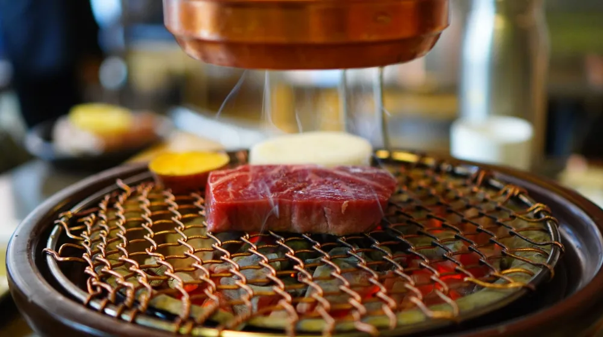

종가음식 프라이빗 다이닝, 가격대별 경험 완벽 비교 가이드
사진: Mathias Reding / Pexels (무료 이미지, 출처 표기)
종가음식 프라이빗 다이닝, 왜 특별할까요?

종가음식 프라이빗 다이닝을 찾으시는 분들이 많습니다. 단순히 배를 채우는 식사를 넘어, 대를 이어 내려온 특별한 레시피와 스토리가 담긴 전통 음식을 오롯이 경험하고 싶기 때문일 것입니다. 격식 있는 모임이나 특별한 기념일을 위한 장소로 각광받으며, 고즈넉한 한옥 공간에서 맛보는 종가의 손맛은 잊지 못할 추억을 선사합니다.
종가음식 프라이빗 다이닝 가격대를 결정하는 요소
종가음식 프라이빗 다이닝의 가격은 단순히 음식 값만을 의미하지 않습니다. 공간의 품격, 식재료의 희소성, 서비스의 수준 등 여러 요소가 복합적으로 작용하여 결정됩니다. 2026년 08월 기준으로 주요 가격 결정 요인은 다음과 같습니다.
- 장소와 분위기: 전통 고택, 현대식 한옥 레스토랑, 호텔 내 한식당 등 공간의 건축미와 인테리어 수준이 가격에 영향을 미칩니다.
- 코스 구성 및 식재료: 제철 식재료 사용 여부, 귀한 전통 식재료 포함 여부, 코스 요리의 가짓수와 구성 난이도가 중요합니다.
- 서비스 수준: 전담 서버 유무, 음식에 대한 해설, 전통주 페어링 서비스, 특별한 다기 사용 등 서비스의 디테일이 가격을 높입니다.
- 종가의 명성 및 셰프: 특정 종가의 이름값, 명인 셰프의 참여, 미슐랭 가이드 등재 이력 등 브랜드 가치도 큰 영향을 줍니다.
예산별 종가음식 프라이빗 다이닝: 가성비부터 럭셔리까지
종가음식 프라이빗 다이닝은 예산에 따라 다양한 선택지가 있습니다. 2026년 08월 기준으로 일반적인 가격대별 특징을 비교하여 독자님의 선택에 도움을 드리고자 합니다. 실제 가격은 방문 시기, 메뉴 구성, 업장 정책에 따라 상이할 수 있으므로 예약 전 반드시 확인하시길 권장합니다.
종가음식 프라이빗 다이닝 선택 시 체크리스트
만족스러운 종가음식 경험을 위해 다음 체크리스트를 활용해 보세요.
- 방문 목적 명확화: 상견례, 비즈니스, 가족 행사, 기념일 등 목적에 따라 필요한 분위기와 서비스가 다릅니다.
- 예산 설정: 대략적인 예산을 정해두면 선택의 폭을 좁힐 수 있습니다.
- 위치 및 접근성: 대중교통 이용 여부, 주차 공간 확보 여부를 확인합니다.
- 메뉴 구성: 알레르기 유발 식재료, 선호하지 않는 음식이 있는지 미리 확인하고 협의합니다.
- 공간 형태: 프라이빗 룸의 크기, 분위기, 창문 유무 등 세부적인 사항을 고려합니다.
- 추가 서비스: 전통주 페어링, 음식 스토리텔링, 채식 메뉴 가능 여부 등을 확인합니다.
종가음식 예약 시 주의할 점 및 팁
성공적인 종가음식 프라이빗 다이닝을 위한 몇 가지 주의사항과 팁입니다.
- 사전 예약 필수: 특히 유명한 종가음식점은 몇 달 전부터 예약이 마감되는 경우가 많습니다. 최소 2~4주 전에는 예약하는 것이 좋습니다.
- 메뉴 및 알레르기 사전 고지: 방문 인원의 식사 선호도나 알레르기 유무를 미리 알려주면 맞춤형 서비스나 대체 메뉴 제공이 원활합니다.
- 취소/환불 규정 확인: 예약 변경이나 취소 시 위약금 규정이 있을 수 있으니 반드시 사전에 확인해야 합니다.
- 후기 및 평점 참고: 방문 후기와 평점을 참고하여 서비스 수준이나 실제 분위기를 가늠해 볼 수 있습니다.
- 드레스 코드 확인: 일부 고품격 다이닝의 경우 드레스 코드가 있을 수 있으므로 미리 확인하는 것이 좋습니다.
자주 묻는 질문 (FAQ)
종가음식 프라이빗 다이닝과 관련하여 독자들이 궁금해하는 질문들을 모아봤습니다.
🔗 이 글도 함께 보면 좋아요: 여권 만료일 놓치면 후회! 지금 바로 확인하고 재발급 완벽 가이드
관련 추천 상품
종가음식, 전통주, 한식기, 전통식기 관련 인기 상품 보러가기
이 포스팅은 쿠팡 파트너스 활동의 일환으로, 이에 따른 일정액의 수수료를 제공받습니다.
자주 묻는 질문(FAQ) (탭하면 펼쳐져요)
Q1. 종가음식 프라이빗 다이닝은 왜 일반 한정식보다 비싼가요?
A. 종가음식 프라이빗 다이닝은 대를 이어 내려온 고유의 조리법과 희소성 높은 식재료를 사용하며, 품격 있는 공간과 세심한 서비스, 그리고 음식에 깃든 역사와 스토리를 함께 제공하기 때문입니다. 이러한 요소들이 복합적으로 작용하여 일반 한정식보다 높은 가격대를 형성합니다.
Q2. 전통주 페어링은 꼭 필요한가요?
A. 필수는 아니지만, 전통주 페어링은 종가음식의 풍미를 더욱 깊게 하고 미식 경험을 풍성하게 만듭니다. 각 음식에 어울리는 전통주를 전문가가 추천해주므로, 음식의 맛과 향을 한층 더 섬세하게 즐길 수 있습니다. 선택 사항이므로 개인의 취향에 따라 결정하시면 됩니다.
Q3. 어떤 모임에 종가음식 프라이빗 다이닝이 적합한가요?
A. 종가음식 프라이빗 다이닝은 격식 있는 상견례, 중요한 비즈니스 접대, 부모님 생신이나 결혼기념일 같은 가족 행사, 또는 특별한 미식 경험을 선물하고 싶은 경우에 매우 적합합니다. 조용하고 품격 있는 분위기에서 깊이 있는 대화를 나누기에도 좋습니다.